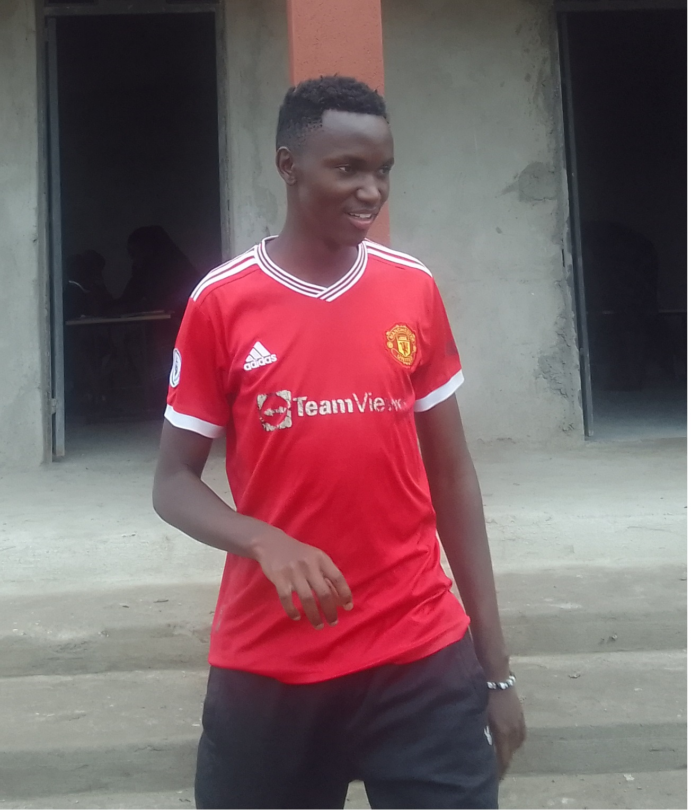

About Me

Hello, I'm Lewis Ombaka, an enthusiastic IT professional based in Nairobi, Kenya. With a deep passion for technology and innovation, I thrive on exploring new developments in the IT world and finding practical solutions to everyday challenges.
Outside of my professional endeavors, I'm an avid football enthusiast and acting aficionado. Football allows me to stay active and connected with my competitive side, while acting fuels my creativity and love for storytelling.
Let's connect on LinkedIn to explore opportunities in IT, share insights, or discuss our mutual passions. I'm always excited to network with like-minded individuals who share a passion for technology and personal growth.
Nairobi, Kenya

Nairobi, the vibrant capital city of Kenya, captivates with its blend of modernity and rich cultural heritage.
From its bustling markets and iconic skyscrapers to its lush green spaces and wildlife sanctuaries, Nairobi offers a unique experience at every corner. It's a melting pot of cultures, where traditional Maasai beadwork meets contemporary art galleries and international cuisine.
Nairobi is not just a city; it's a gateway to Kenya's breathtaking landscapes, including the world-famous Maasai Mara and Amboseli National Park. Here, wildlife enthusiasts can witness the Big Five and marvel at the annual wildebeest migration.